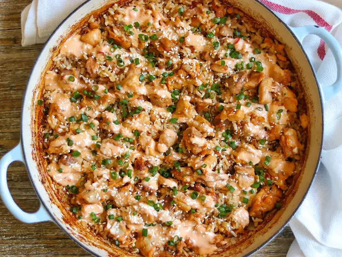

Home
Chiken-casserole

Description
This bang bang chicken casserole is an all-in-one chicken and rice dish
topped with a bang bang sauce inspired by Bonefish Grill's iconic Bang
Bang Shrimp. Spiced and sauteed chicken baked over rice in a single
skillet minimizes hands-on time, and results in a spicy, savory dish with
a hint of sweetness.
Ingredients
-
2 pounds skinless boneless chicken thighs, cut into bite-size pieces
- 1 teaspoon onion powder
- 8 cups chicken broth , + 2 cups water
- 4 tablespoons Sriracha chile sauce, divided
- 3 tablespoons soy sauce, divided
- 2 tablespoons finely chopped garlic, divided
- 3 tablespoons all-purpose flour
- 3 tablespoons neutral oil, such as canola
- 1 cup uncooked white jasmine rice
- 1/4 cup plus 2 tablespoons sweet chili sauce, divided
- 1 tablespoon rice vinegar, divided
- 2 cups chicken broth
- 1 cup mayonnaise
- 1/2 cup thinly sliced green onions
- sesame seeds
Steps
-
Gather all ingredients. Preheat the oven to 375 degrees F (190 degrees
C).
-
Toss together chicken, onion powder, 2 tablespoons Sriracha, 2
tablespoons soy sauce, and 1 tablespoon garlic until well combined in a
large bowl. Sprinkle with flour until completely coated.
-
Heat oil in a large cast-iron skillet over medium-high heat until
shimmering. Working in 2 batches, add chicken in an even layer; cook,
undisturbed, until browned on both sides, about 6 minutes total,
flipping halfway through. Transfer chicken to a plate. Do not wipe
skillet clean. Repeat with remaining chicken.
-
Reduce heat to medium and stir in rice, 2 tablespoons sweet chili sauce,
1 1/2 teaspoons rice vinegar, remaining 1 tablespoon soy sauce, and
remaining 1 tablespoon garlic. Cook, stirring occasionally, until
fragrant and rice is toasted, about 2 minutes.
-
Stir in broth and bring to a boil over medium-high. Remove from heat and
top evenly with chicken. Cover with a tight-fitting lid or aluminum
foil.
-
Bake in the preheated oven until rice is tender and cooked through, 22
to 25 minutes.
-
Meanwhile, whisk together mayonnaise, remaining 1/4 cup sweet chili
sauce, 2 tablespoons Sriracha, and 1 1/2 teaspoons rice vinegar until
smooth. Transfer to a squeeze bottle, or transfer to a resealable
plastic bag, reseal the bag, and cut off a small corner.
-
Drizzle casserole with bang bang sauce as desired. Garnish with
scallions and sesame seeds.